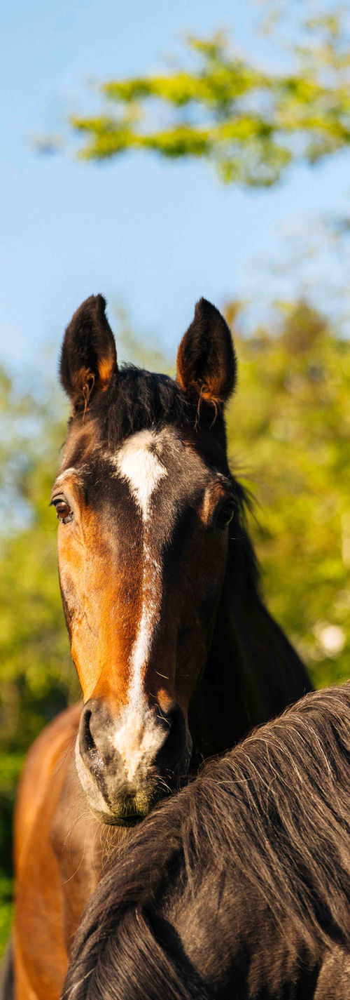
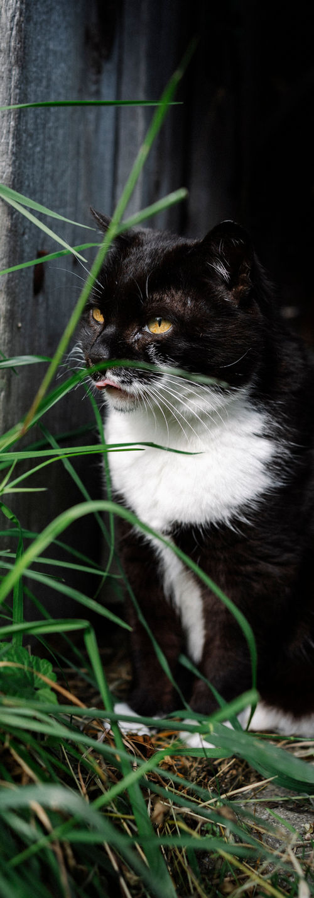
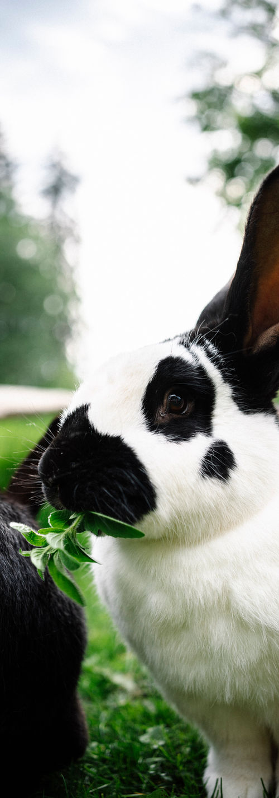
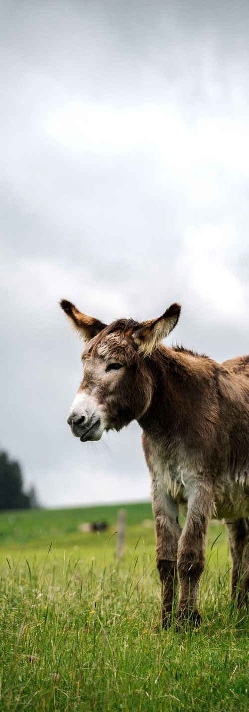
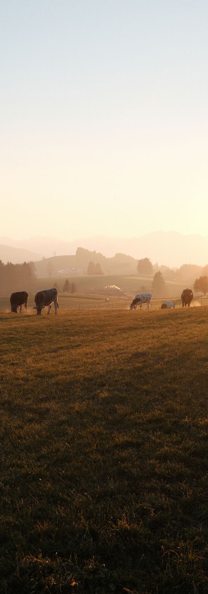
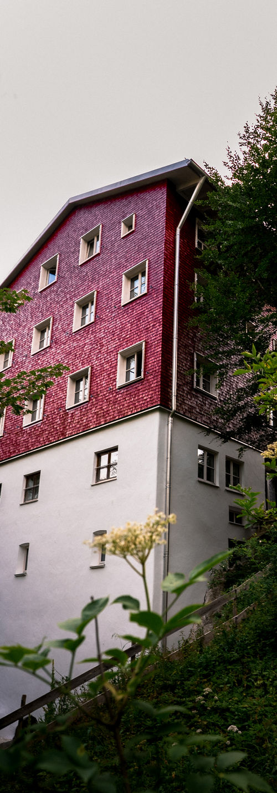
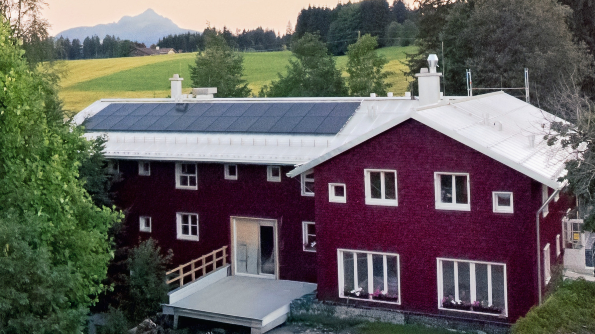

Die Wertacher Mühle im Allgäu
Wir liegen auf fast 1000 Metern Höhe – umgeben von Wiesen, Bäumen und Bergpanorama. Alle Zimmer blicken ins Grüne. Und vor der Tür beginnt die Natur – einfach Natur erleben.
Auf der Rückseite fließt ein Bach, der früher das Mühlrad angetrieben hat. Man hört ihn im Haus – mal leise, mal deutlicher. Nach dem Brand von 2021 wurde die Mühle als ökologisches Vollholzhaus wieder aufgebaut – mit Erdwärme, Sonnenstrom vom Dach und Holzöfen in den Stuben.
Das Haus ansehen
Zum Alltag gehören auch die Tiere
Katzen im Haus, Pferde im Stall und Hasen im Garten. Und natürlich auch die Kühe auf den Weiden der Nachbarbauern. Sie sind einfach da und begleiten das Leben auf der Mühle.





Ein ruhiger Ort mit viel Raum. Und einer, an dem sich manches von selbst ergibt.

Ferien für Menschen, die Gemeinschaft suchen
Die Mühle wird vom gemeinnützigen Verein „Wertacher Mühle, Sonnenhof e.V.“ getragen. In den Schulferien gehört das Haus den Alleinerziehenden und ihren Kindern. Dazwischen kommen Schulklassen, Familienfreizeiten, Seminare und Gruppen aller Art.
- Urlaub für Singleeltern — Ferien in Gemeinschaft, in allen Schulferien
- Gruppen — Freizeiten, Seminare, Vereine und Chöre
- Schulklassen — Klassenfahrten mit Natur und Tieren
Sechshundert Jahre Mühlengeschichte
Erste urkundliche Erwähnung als „Schleifmühle“. Über Jahrhunderte werden hier Roggen, Weizen und Hafer gemahlen.
Bis 1990 privates Kindererholungsheim „Sonnenhof“ für bis zu 80 Kinder.
Gründung des gemeinnützigen Vereins „Wertacher Mühle, Sonnenhof e.V.“ – seither Ferien für Alleinerziehende, Gruppen und Schulklassen.
Ein Brand zerstört das alte Mühlengebäude. Viele Freundinnen und Freunde der Mühle helfen beim Neuanfang.
Die neue Mühle steht – aus massivem Holz, gebaut für die nächsten Generationen.

Lust auf Mühle bekommen?
Fragen zu Terminen, Belegung oder einfach Lust, die Mühle kennenzulernen? Ruft an unter 08365 / 1628 oder schreibt an Wertachermuehle@web.de.
Kontakt & Anfahrt